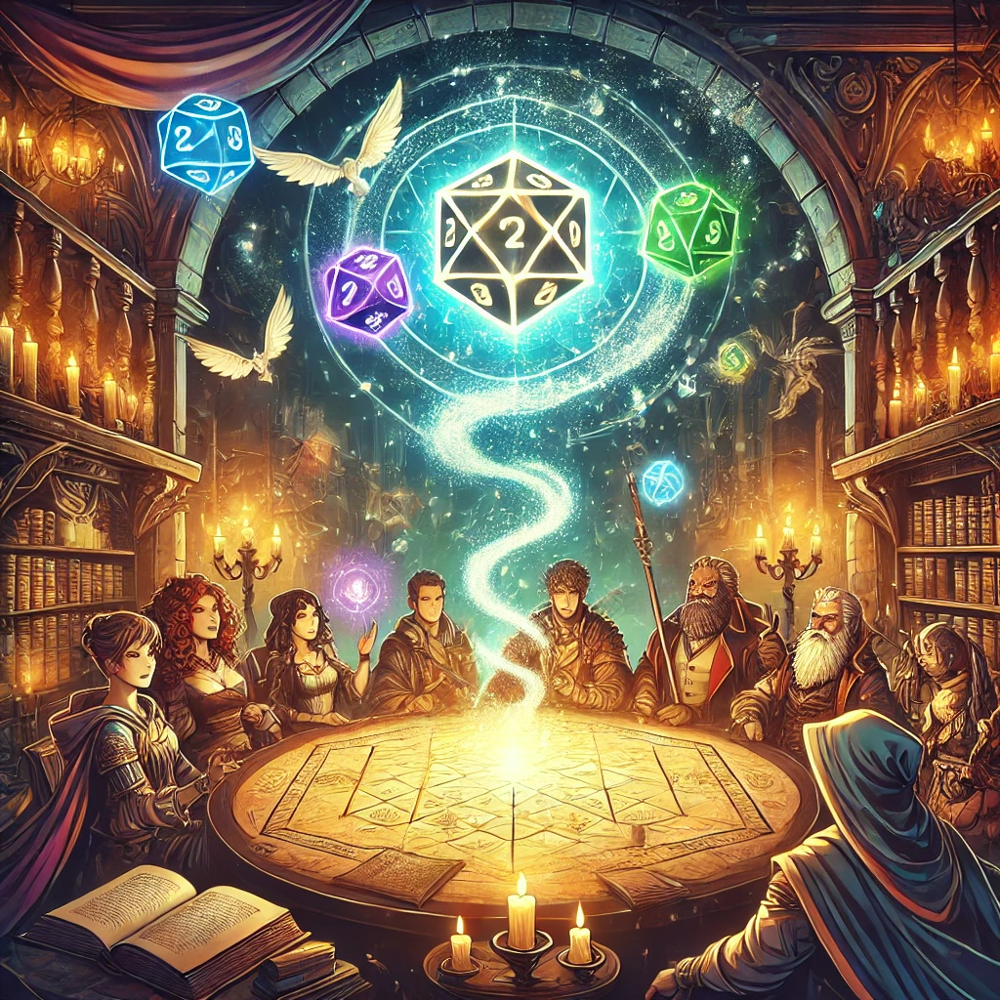
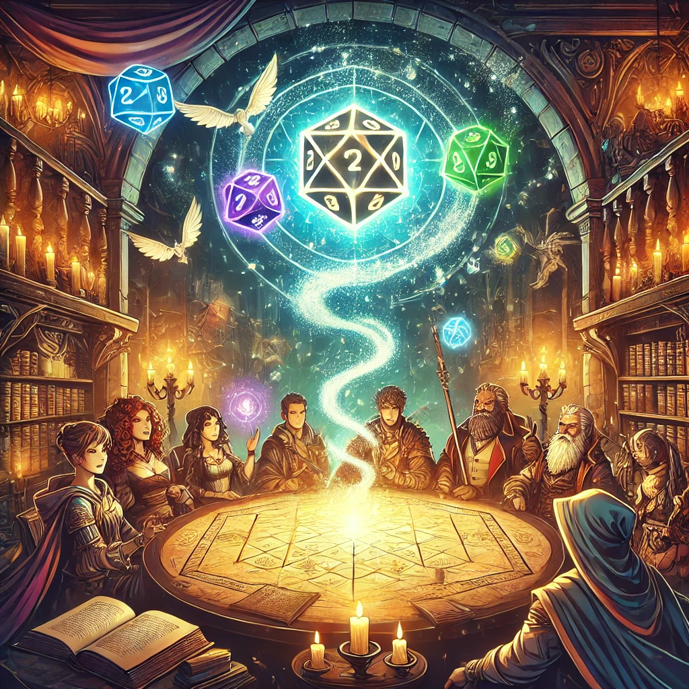
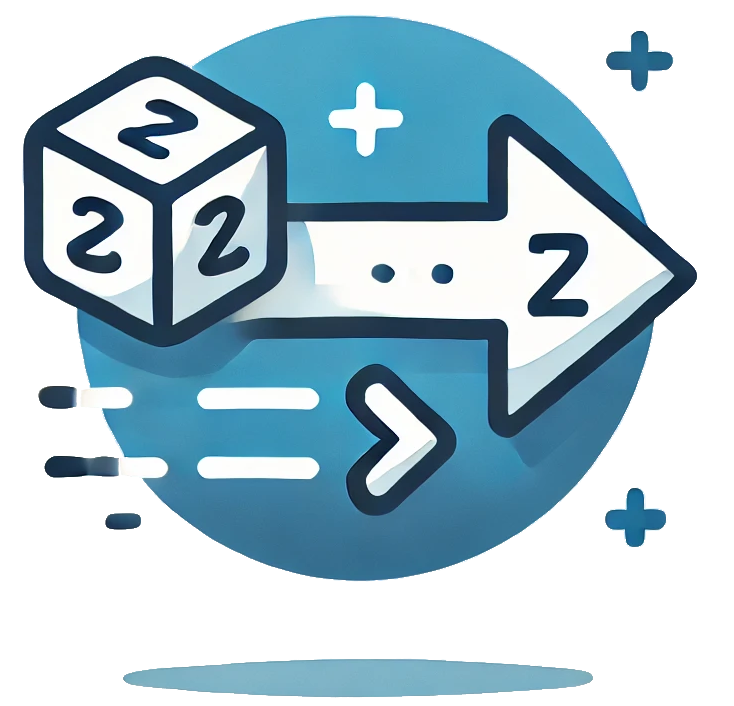

 Trasfondo del Mundo
Trasfondo del Mundo
El mundo donde se desarrolla este sistema de juego parece familiar, pero está plagado de sutiles diferencias que lo hacen único. Aunque en la superficie es similar al mundo que conocemos, en su núcleo se perciben normas culturales, morales y religiosas que han tomado caminos divergentes.
En este entorno, los “Elegidos” son personas con habilidades sobrenaturales limitadas que desafían la comprensión común. La sociedad los percibe como una amenaza, asociándolos con conceptos arcaicos como la brujería o los milagros. Este prejuicio ha llevado a la persecución y marginación de los Elegidos, obligándolos a vivir en las sombras o bajo identidades falsas.
El conflicto principal se centra en la supervivencia de los Elegidos: ¿se adaptarán al papel de forasteros ocultos o se atreverán a luchar por cambiar las percepciones de la sociedad? Este dilema establece el tono del juego, ofreciendo infinitas oportunidades narrativas.
Historia del Mundo
La sociedad ha evolucionado de manera paralela a la nuestra, pero ciertos eventos históricos clave difieren. Por ejemplo:
- Religiones: Las religiones han adoptado posturas más absolutistas frente a lo sobrenatural, reforzando el rechazo a los Elegidos.
- Tecnología: Aunque la tecnología es similar a la actual, ciertos tabúes han limitado su avance en áreas específicas como la biotecnología.
En este contexto, los conceptos de justicia y honor están profundamente influenciados por un temor hacia lo desconocido. Las autoridades a menudo justifican la persecución de los Elegidos como un "acto de protección divina".
Los Elegidos
Los Elegidos no heredan sus poderes genéticamente ni a través de ritos mágicos. En su lugar, estos poderes parecen manifestarse al azar, como una “anomalía evolutiva”. Esto hace que incluso dentro de una misma familia, un Elegido pueda ser considerado un paria.
Sus poderes son vistos como peligrosos y antinaturales, lo que los coloca en constante peligro de persecución. Algunos deciden ocultar su identidad, mientras que otros buscan formas de usar sus dones para influir en la sociedad.
- Origen de los Poderes: Los poderes pueden surgir espontáneamente durante la adolescencia o como respuesta a un evento traumático.
- Sectores Culturales: En ciertas regiones más liberales, los Elegidos son tolerados siempre que mantengan sus habilidades bajo control.
Mecánicas Relacionadas con el Trasfondo
- Rol de los Elegidos: Cada jugador debe decidir cómo maneja su condición. ¿Se ocultan, usan sus poderes en secreto o los exhiben abiertamente?
- Eventos Narrativos Aleatorios: El Narrador puede incluir eventos como registros obligatorios, persecuciones religiosas o delaciones por parte de NPCs.
Sistema de Decisiones
Las decisiones de los jugadores tienen un impacto directo en el mundo. Por ejemplo:
- Ayudar a una aldea hostil puede mejorar la percepción pública, pero a costa de recursos o riesgos personales.
- Usar poderes públicamente puede resolver problemas inmediatos, pero aumentar la persecución a largo plazo.
 Mecánicas de los Atributos
Mecánicas de los Atributos
Distribución Inicial
Al inicio del juego, cada jugador dispone de 40 puntos para repartir entre los seis atributos básicos: Fuerza (FUE), Agilidad (AGI), Resistencia (RES), Inteligencia (INT), Carisma (CAR) y Voluntad (VOL).
Las reglas de distribución inicial son las siguientes:
- Cada atributo debe tener al menos 1 punto.
- El valor máximo inicial permitido en un atributo es 10 puntos.
Ejemplo de Distribución Inicial:
| Atributo | Puntos Asignados |
|---|---|
| Fuerza (FUE) | 8 |
| Agilidad (AGI) | 6 |
| Resistencia (RES) | 10 |
| Inteligencia (INT) | 7 |
| Carisma (CAR) | 4 |
| Voluntad (VOL) | 5 |
Modificadores
El valor de cada atributo se utiliza como bono en las tiradas relacionadas con ese atributo. La fórmula básica es la siguiente:
Resultado de la tirada (1d20) + Bono del Atributo + Bonos adicionales (habilidades, equipo, etc.)
Ejemplo Práctico:
Situación: El jugador intenta abrir una puerta cerrada con fuerza bruta.
Atributo: Fuerza (FUE) = 8.
Dificultad Objetivo (DO): 15.
Tirada: El jugador lanza un 1d20 y obtiene un 10.
Cálculo final: 10 (tirada) + 8 (FUE) = 18. El personaje supera la DO y logra abrir la puerta.
Los modificadores influyen en todas las acciones del juego, tanto narrativas como de combate.
Evolución
Durante la campaña, los jugadores pueden invertir puntos de experiencia (PE) para mejorar sus atributos y adaptarse a los desafíos crecientes.
Reglas para Mejorar Atributos:
| Valor Actual del Atributo | Costo en PE para Incrementar +1 |
|---|---|
| 1–5 | 5 PE |
| 6–8 | 10 PE |
| 9–10 | 15 PE |
Restricciones:
- Un atributo no puede superar el valor de 15 puntos sin habilidades o efectos especiales.
- Solo se puede mejorar un atributo al final de una sesión o después de un evento significativo narrado por el Narrador.
Estrategias de Evolución:
- Fortalecer atributos clave: Incrementar los atributos principales para especializar aún más al personaje.
- Corregir debilidades: Usar PE para mejorar atributos bajos que han generado dificultades durante la campaña.
 Dados Usados
Dados Usados
En este sistema de juego, los dados son fundamentales para resolver acciones, calcular daños y determinar resultados de eventos. Cada tipo de dado tiene un propósito específico y contribuye al dinamismo de la narrativa y el combate.
Tipos de Dados y Sus Usos
| Dado | Usos Principales | Ejemplo |
|---|---|---|
| 1d20 (principal) | Resolver la mayoría de las acciones importantes, como ataques, pruebas de habilidad o resistencias. | Intentar saltar un abismo con una prueba de Agilidad (AGI). |
| 1d4 | Calcular daño de ataques débiles o efectos de poderes menores. | Un golpe rápido con un arma ligera inflige 1d4 de daño. |
| 1d6 | Determinar daño de armas cuerpo a cuerpo estándar o efectos moderados. | Un golpe con un garrote hace 1d6 + FUE de daño. |
| 1d8 | Calcular daño de armas a distancia, como pistolas o arcos. | Una pistola inflige 1d8 de daño. |
| 1d10 | Usado para armas de gran impacto o efectos significativos. | Un rifle pesado inflige 1d10 + AGI de daño. |
Mecánicas de Dados
El sistema utiliza un enfoque basado en tiradas para determinar el éxito o fracaso de una acción. Aquí tienes los pasos principales:
-
Establecer la Dificultad Objetivo (DO): El Narrador define la dificultad basada en el contexto de la acción.
- Fácil: DO 5 (abrir una puerta sin cerradura).
- Moderada: DO 15 (esquivar un ataque básico).
- Difícil: DO 20 (cruzar un puente inestable bajo presión).
- Lanzar el dado correspondiente: Generalmente, se usa el 1d20 para las tiradas principales.
- Añadir los modificadores: Suma el atributo relacionado y otros bonos aplicables (habilidades, equipo, etc.).
- Comparar el resultado: Si el resultado final iguala o supera la DO, la acción tiene éxito.
Ejemplos Prácticos
-
Situación: El jugador intenta disparar a un enemigo con una pistola.
Tirada: 1d20 para determinar si el disparo impacta.
Fórmula de daño: Si el disparo impacta, se lanza 1d8 para calcular el daño infligido. -
Situación: El jugador usa telequinesis para mover un objeto pesado.
Tirada: 1d20 para comprobar si logra moverlo.
Resultado: El éxito depende de la DO establecida por el Narrador y del atributo Voluntad (VOL) del jugador. -
Situación: Un enemigo ataca con un garrote.
Tirada: 1d20 para determinar si el ataque impacta.
Fórmula de daño: Si el ataque impacta, el Narrador lanza 1d6 + FUE del enemigo para calcular el daño.
 Habilidades
Habilidades
Las habilidades representan las áreas específicas en las que un personaje puede destacar y tener un mayor impacto en el juego. Al crear un personaje, cada jugador puede seleccionar 3 habilidades destacadas. Estas habilidades comienzan con un bono inicial de +2 y están asociadas a un atributo principal.
Categorías de Habilidades
Cada habilidad pertenece a una de las seis categorías de atributos básicos. Los jugadores pueden elegir habilidades relacionadas con sus atributos más altos para maximizar su eficacia.
| Atributo | Habilidades Asociadas | Descripción |
|---|---|---|
| Fuerza (FUE) | Atletismo, Trepar, Nadar | Habilidades físicas que requieren potencia y esfuerzo. |
| Agilidad (AGI) | Sigilo, Esquivar, Acrobacias | Habilidades que dependen de la destreza, los reflejos y la coordinación. |
| Resistencia (RES) | Supervivencia, Resistencia Física, Tolerancia | Habilidades que miden la capacidad de soportar condiciones adversas. |
| Inteligencia (INT) | Investigación, Tecnología, Conocimiento | Habilidades relacionadas con el razonamiento y el análisis lógico. |
| Carisma (CAR) | Persuasión, Intimidación, Engaño | Habilidades sociales que implican interacción y manipulación. |
| Voluntad (VOL) | Resistencia Mental, Concentración, Meditación | Habilidades que reflejan la fortaleza mental y la capacidad de enfoque. |
Mecánicas de Uso de Habilidades
Las habilidades se utilizan para realizar acciones específicas que requieren destreza o experiencia. El proceso para usar una habilidad es el siguiente:
- Declarar la acción: El jugador describe qué intenta hacer, indicando la habilidad que desea usar.
-
Realizar una tirada de 1d20: El jugador lanza un dado de 20 caras y suma:
- El bono del atributo asociado.
- El bono inicial de la habilidad (si es destacada).
- Cualquier modificador adicional otorgado por equipo o circunstancias.
- Comparar con la Dificultad Objetivo (DO): Si el resultado total iguala o supera la DO establecida por el Narrador, la acción tiene éxito.
Ejemplo: Un personaje con la habilidad destacada "Sigilo" (+2) intenta infiltrarse en un campamento enemigo. El atributo Agilidad (AGI) del personaje es 6. El jugador lanza 1d20 y obtiene un 12. El resultado total es:
12 (tirada) + 6 (AGI) + 2 (Sigilo) = 20
Si la DO establecida por el Narrador es 18, el personaje logra infiltrarse sin ser detectado.
Lista de Habilidades y Descripciones
| Habilidad | Atributo Asociado | Descripción |
|---|---|---|
| Atletismo | Fuerza (FUE) | Realizar tareas físicas como correr largas distancias o levantar objetos pesados. |
| Sigilo | Agilidad (AGI) | Desplazarse sin ser detectado por enemigos u observadores. |
| Supervivencia | Resistencia (RES) | Encontrar comida, refugio y recursos en entornos hostiles. |
| Investigación | Inteligencia (INT) | Analizar pistas, resolver acertijos o buscar información relevante. |
| Persuasión | Carisma (CAR) | Convencer a otros para que actúen a favor del personaje. |
| Resistencia Mental | Voluntad (VOL) | Resistir efectos psicológicos o mantener la calma bajo presión. |
 Poderes
Poderes
Los Elegidos poseen habilidades sobrenaturales que pueden emplear para influir en el mundo que los rodea. Cada poder tiene limitaciones específicas para mantener el equilibrio del sistema. A continuación, se presentan 15 poderes ampliamente desarrollados, junto con sus descripciones y ejemplos de uso.
| Poder | Descripción | Ejemplo de Uso |
|---|---|---|
| Telequinesis | Mueve objetos pequeños (máx. 5 kg). Requiere concentración. | Desplazar un arma fuera del alcance del enemigo (DO 15). |
| Clarividencia | Permite ver imágenes de eventos cercanos en el tiempo (1 minuto). | Predecir una emboscada o una trampa (DO 20). |
| Regeneración | Sanar heridas menores. Recupera 1d6 puntos de vida por descanso corto. | Usar el poder tras un combate para sanar heridas superficiales. |
| Control de Fuego | Crear y manipular llamas pequeñas. Inflige 1d4 de daño por turno. | Encender una antorcha o atacar con una pequeña bola de fuego (DO 12). |
| Manipulación de Gravedad | Alterar el peso de un objeto en un 50% (máx. 10 kg). | Hacer más liviano un cofre para transportarlo (DO 18). |
| Telepatía | Leer pensamientos o enviar mensajes mentales (alcance de 20 m). | Comunicarse silenciosamente con un aliado durante una misión (DO 15). |
| Precognición | Predecir el movimiento de un enemigo en combate. Gana +2 en defensa. | Evitar un golpe crítico al anticipar el ataque (DO 17). |
| Control de Sombra | Oscurecer un área para reducir la visibilidad del enemigo (5 m de radio). | Crear una zona de sombras para escapar de un enfrentamiento (DO 16). |
| Proyección Astral | Explorar un área cercana en forma espiritual durante 5 minutos. | Inspeccionar un edificio sin ser detectado (DO 20). |
| Control de Agua | Manipular pequeñas cantidades de agua para crear corrientes o salpicaduras. | Apagar un fuego o atacar con una corriente de agua (DO 14). |
| Creación de Escudos | Formar barreras temporales que absorben 1d6 de daño. | Proteger a un aliado de un ataque crítico (DO 15). |
| Absorción de Energía | Convertir daño eléctrico en puntos de vida (1d4 por ataque recibido). | Recibir un impacto eléctrico y recuperarse en lugar de sufrir daño. |
| Comunión Animal | Hablar y entender animales durante 10 minutos. | Convencer a un cuervo para que recoja un objeto perdido (DO 13). |
| Desintegración Parcial | Reducir la integridad estructural de un objeto pequeño. | Debilitar una cerradura para romperla más fácilmente (DO 18). |
| Manipulación de Luz | Crear destellos para cegar temporalmente a un enemigo (1 turno). | Desorientar a un guardia durante una huida (DO 16). |
Notas sobre el Uso de Poderes
- Algunos poderes requieren un gasto de energía o un descanso antes de volver a usarse.
- El Narrador puede ajustar las dificultades según el contexto narrativo.
- Los poderes pueden combinarse creativamente para resolver problemas complejos.
 Resolución de Acciones
Las acciones en el juego se resuelven mediante tiradas de dados y comparaciones con una Dificultad Objetivo (DO). El Narrador determina la DO según la complejidad de la acción y las condiciones del entorno. Los jugadores pueden sumar bonificaciones de atributos, habilidades y equipo a sus tiradas para aumentar sus posibilidades de éxito.
Tabla de Dificultades
A continuación, se presenta una tabla con los niveles típicos de dificultad y ejemplos para cada uno:
| Dificultad | Descripción | DO | Ejemplo |
|---|---|---|---|
| Muy Fácil | Acciones triviales que casi siempre tienen éxito. | 5 | Encender una vela en un ambiente tranquilo. |
| Fácil | Tareas simples con un mínimo de habilidad. | 10 | Trepar una valla baja. |
| Moderada | Requiere habilidad o concentración. | 15 | Esquivar un ataque enemigo. |
| Difícil | Un verdadero desafío para la mayoría de personajes. | 20 | Desactivar una trampa compleja bajo presión. |
| Muy Difícil | Acciones que requieren destreza extraordinaria. | 25 | Convencer a un enemigo hostil de que no ataque. |
| Épico | Solo personajes excepcionales pueden lograrlo. | 30 | Saltar entre dos edificios lejanos en mal estado. |
Resolviendo Acciones
Para resolver una acción, sigue estos pasos:
- Describe la acción: El jugador explica lo que intenta hacer.
- Establece la DO: El Narrador determina la dificultad según la situación.
- Realiza la tirada: Lanza un dado de 20 caras (1d20) y suma:
- Bono del atributo relevante: Cada acción está ligada a un atributo.
- Bono de habilidad: Si la acción está relacionada con una habilidad destacada.
- Otros modificadores: Bonificaciones de equipo, poderes o circunstancias especiales.
- Comparación con la DO: Si el resultado total iguala o supera la DO, la acción tiene éxito.
Modificadores Adicionales
En ciertas situaciones, el Narrador puede aplicar modificadores para reflejar las condiciones del entorno:
- Ventaja: Permite lanzar dos 1d20 y quedarse con el mejor resultado. Ejemplo: Realizar una acción en un entorno favorable.
- Desventaja: Lanza dos 1d20 y toma el peor resultado. Ejemplo: Intentar actuar mientras estás herido o bajo presión extrema.
- Bonificaciones del equipo: Por ejemplo, usar herramientas especializadas puede otorgar +2 o más a la tirada.
Ejemplo Completo
Un personaje intenta cruzar un puente colgante deteriorado mientras lo persiguen. El Narrador establece una DO de 18 debido al mal estado del puente y la presión de la situación. El jugador tiene:
- Agilidad (AGI): +4.
- Habilidad de Acrobacias: +2.
- Tirada de 1d20: Lanza el dado y obtiene un 13.
Cálculo: 13 (tirada) + 4 (AGI) + 2 (Acrobacias) = 19.
El resultado supera la DO de 18, por lo que el personaje cruza con éxito el puente antes de que los perseguidores puedan atraparlo.